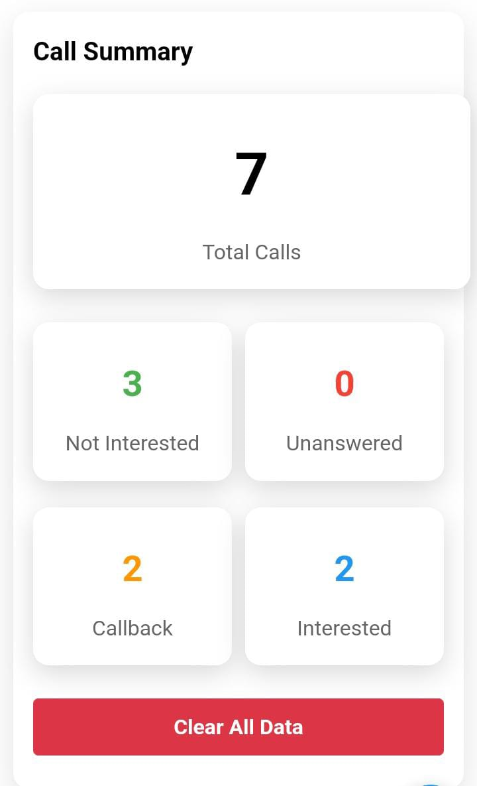
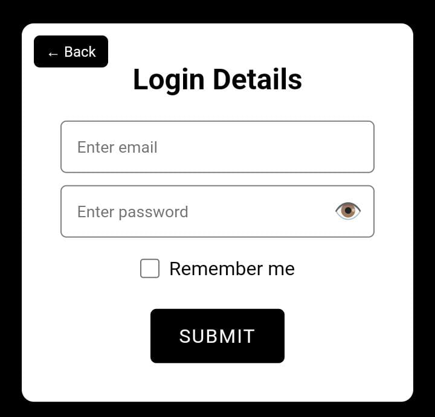
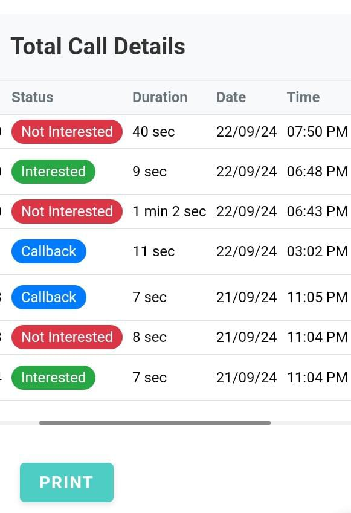
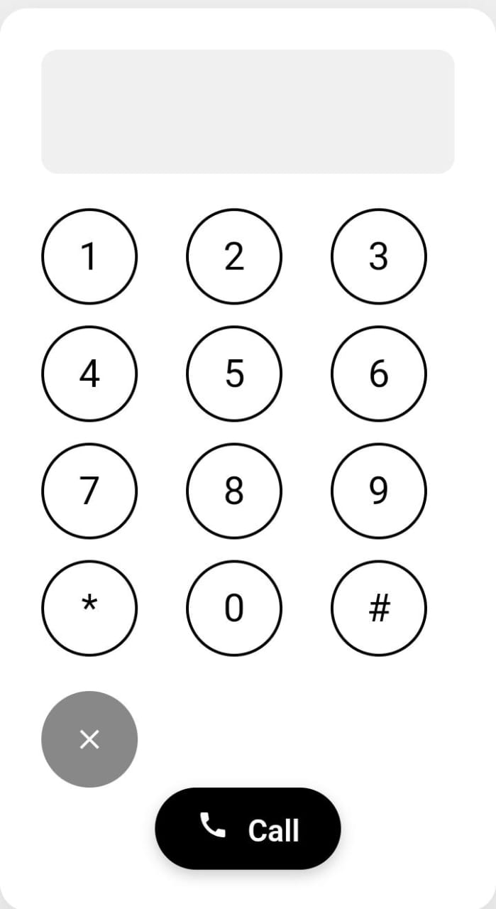
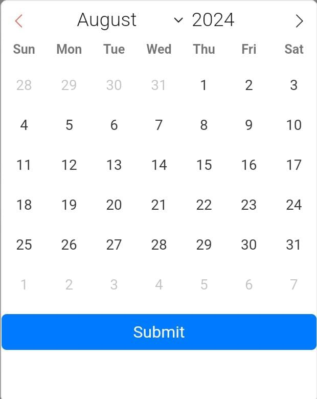
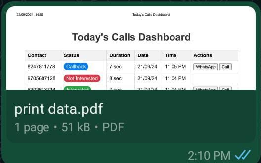

About Our Call Center Management System
Welcome to our state-of-the-art Call Center Management System! This comprehensive solution is designed to streamline operations, enhance productivity, and improve customer satisfaction in modern call centers. Let's take a tour through the key features and components of our system.
1. User-Friendly Dashboard
Our main dashboard (maindashboard.html) serves as the central hub for all call center activities. It provides a quick overview of key metrics, ongoing calls, and important notifications. The dashboard is designed to be intuitive and easy to navigate, ensuring that agents and managers can access the information they need quickly and efficiently.
2. Secure Login System
Security is paramount in our system. The index.html page features a robust login mechanism with password visibility toggle and remember me functionality, ensuring that only authorized personnel can access sensitive information. The login system is designed with multiple layers of security to protect user data and prevent unauthorized access.
3. Real-Time Call Monitoring
The today_calls.html page offers a comprehensive view of all calls handled during the current day. This real-time tracking helps managers and supervisors stay on top of call center performance. The page includes detailed call logs, performance metrics, and the ability to monitor live calls, providing valuable insights into daily operations.
4. Monthly Performance Analysis
With monthly_calls.html, users can analyze call trends and performance metrics over a longer period. This feature is crucial for identifying patterns and making data-driven decisions. The page includes visualizations such as graphs and charts to help users easily interpret the data and track performance over time.

5. Advanced Dialpad
Our system includes a feature-rich dialpad (dialpad.html) that allows agents to make outbound calls efficiently. It's designed with user experience in mind, making it easy to use even during high-volume periods. The dialpad includes features such as speed dial, call transfer, and call recording, ensuring that agents have all the tools they need to handle calls effectively.
6. Print Functionality
Our system includes a print functionality that allows users to easily print important documents and reports. This feature ensures that users can have physical copies of essential information for record-keeping and offline review.
7. Calendar Integration
We have integrated a calendar feature into our system to help users manage their schedules effectively. The calendar allows users to schedule calls, set reminders, and view upcoming events, ensuring that they stay organized and on top of their tasks.
8. Save as PDF
Our system includes a "Save as PDF" functionality that allows users to save important documents and reports in PDF format. This feature ensures that users can easily share and store digital copies of essential information.
Conclusion
Our Call Center Management System is more than just a tool – it's a complete ecosystem designed to empower call center staff and elevate customer service. By combining real-time monitoring, historical analysis, and user-friendly interfaces, we've created a solution that meets the complex needs of modern call centers.
We're constantly evolving and improving our system based on user feedback and industry trends. Stay tuned for exciting new features and updates!